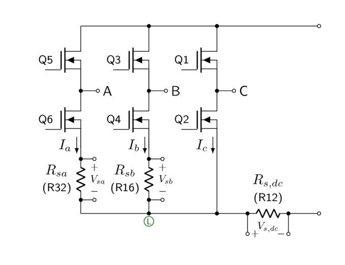
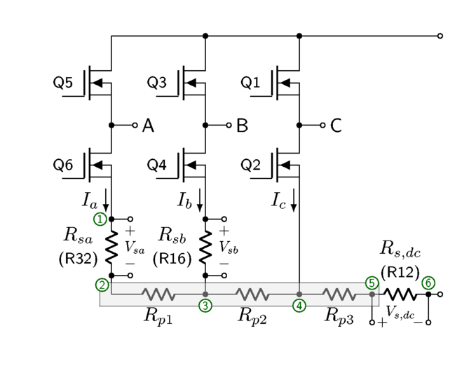
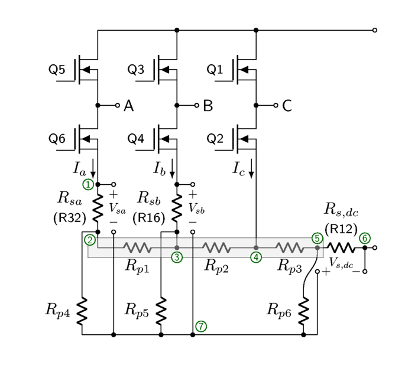

7.3. MCLV-2 采样电阻¶
dsPICDEM® MCLV-2 开发板 包含一个三相桥，在桥的 A 和 B 支路以及 DC 电流路径上具有低边 25 mΩ 分流电阻用于电流检测电路，如 图 7.1所示。采样电阻上的电压用于检测电流 \(I_a\)， \(I_b\)和 \(I_{dc} = I_a + I_b + I_c\)。

图 7.1 MCLV-2 中的三相桥，理想电路¶
在实际电路板中，连接桥的 A、B 和 C 支路的节点 Ⓛ 处的电流走线电压不均匀，因为它包含沿走线寄生电阻的非零电压降。在 MCLV-2 板中，该电阻可建模为三个串联电阻 \(R_{p1}\)， \(R_{p2}\)和 \(R_{p3}\)，如 图 7.2。开尔文连接直接从采样电阻端子到差分放大器，使这些寄生电阻上的电压降不影响电流测量。

图 7.2 MCLV-2 中的三相桥，布局正确的实际电路¶
遗憾的是，MCLV-2 板存在一些布局错误。虽然使用了开尔文连接，但在信号走线中被短路在一起，因此这些寄生电阻上的电压降 确实 影响电流测量，可有效建模如 图 7.3，其中短路的节点 ⑦ 用作所有三个电流检测电路的公共端。

图 7.3 ¶
这些走线电阻在室温下的近似值（通过将限流电源连接到各对电路节点，测量电源输出的电流和各点电压来测量，例如将电流注入采样电阻 \(R_{sa}\) 并从采样电阻 \(R_{s,dc}\)的节点 ⑦ 引出，以测量 \(R_{p1}\)， \(R_{p2}\)和 \(R_{p3}\)）为
\(R_{p1} \approx 3.3\ \text{m}\Omega\)
\(R_{p2} \approx 2.9\ \text{m}\Omega\)
\(R_{p3} \approx 0.3\ \text{m}\Omega\)
\(R_{p4} \approx 90\ \text{m}\Omega\)
\(R_{p5} \approx 58\ \text{m}\Omega\)
\(R_{p6} \approx 63\ \text{m}\Omega\)
这实际上意味着节点 ⑧ 处的电压 \(V_{7}\) 在节点 ⑦ 处是三个电压的加权平均值 \(V_a\) 在节点 ② 处，\(V_b\) 在节点 ③ 处，和\(V_{dc}\) 在节点 ⑤ 处：\(V_7 = K_aV_a + K_bV_b + K_{dc}V_{dc}\)。还使用测试电流测量了近似权重 \(K_a \approx 0.25\)， \(K_b \approx 0.39\)和 \(K_{dc} \approx 0.36\)。
如果我们在所有低侧开关导通时采样电流，且 \(I_a + I_b + I_c\) 为 0，则 \(R_{p3}\) 上的电压降为 0，另外两个电压降为 \(I_aR_{p1}\) 和 \((I_a + I_b)R_{p2}\)。我们可以分析电路以确定对电流检测的影响，如果我们将采样电阻写为标称电阻 \(R_s\) 带有容差 \(R_{sa} = R_s(1+\delta_a)\) 和 \(R_{sb} = R_s(1+\delta_b)\)，则可将结果简化为：
或以矩阵形式：
其中
换言之，如果采样电阻没有容差误差（\(\delta_a = \delta_b = 0\)），则 \(\mathbf{K} \approx \begin{bmatrix}1.141 & 0.042 \cr 0.009 & 1.042 \end{bmatrix}\)。
补偿增益将为 \(\mathbf{K}_\text{comp} \, = \, \mathbf{K}^{-1} \, \approx \begin{bmatrix}\phantom{-}0.877 & -0.035 \cr -0.008 & \phantom{-}0.960\end{bmatrix}\) （对于标称值）。
这与实验室测量基本一致——向 A 相和 B 相注入已知电流并测量数字化 ADC 值；其中一组测量产生了经验估计 \(\mathbf{K}_\text{empirical}\, = \begin{bmatrix}1.150 & 0.044\cr 0.012 & 1.048\end{bmatrix}\)。